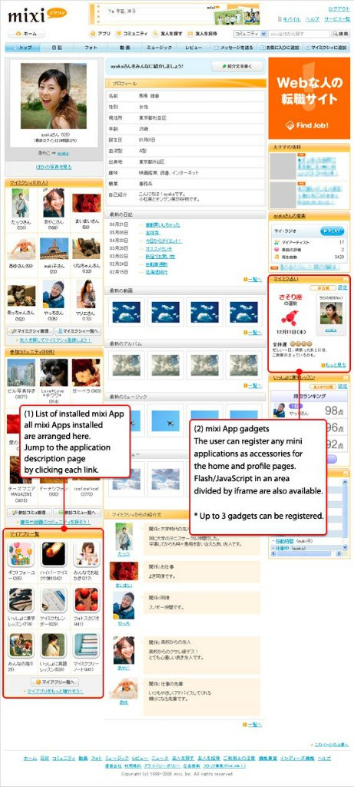

Mixi
mixi (яп. ミクシィ, микуси) — крупнейшая, после Facebook, в Японии социальная сеть, число пользователей в которой по состоянию на сентябрь 2012 года превышает 26 миллионов человек. Участники данного проекта получают возможность вести свой дневник (блог) и читать дневники других людей, публиковать фотографии и видеозаписи, участвовать в многочисленных сообществах, обмениваться сообщениями и оставлять отзывы о медиапродукции. Работа с сервисами mixi бесплатна, однако существует возможность перейти на платную учётную запись (315 иен в месяц). Отличительной чертой этой, а также некоторых других японских социальных сетей является отсутствие свободной регистрации в системе. Для того чтобы завести свою учётную запись, необходимо получить приглашение от одного из уже зарегистрированных пользователей.
Функциональные особенности Mixi:
Для прохождения регистрации на сайте требуется ввод почтового адреса на телефоне в Японии, что значительно затрудняет регистрацию пользователей, находящихся за пределами Японии. Единственный возможный способ завершить регистрацию — найти знакомого в Японии, у которого есть сотовый телефон, с которого ещё не было регистрации в Микси. Дело в том, что на указанный при регистрации адрес отсылается письмо с автоматически сгенерированным линком активации, по которому нужно с телефона зайти на сайт Микси. Зайти по нему с компьютера нельзя. При заходе с телефона определяется индивидуальный номер аппарата, посему дважды зарегистрироваться с одного телефона нельзя. Многочисленные эксперты, например, из Mashable, отмечают простоту интерфейса Mixi. Так, например, выглядит страница пользователя: Основные характеристики Mixi:
1.Большинство её пользователей предпочитает устанавливать вместо собственных изображений посторонние картинки и фотографии — например, любимых кино- и мульт-героев. Администрация Mixi таким попыткам никак не препятствует. Ядро аудитории — люди в возрасте от 20 до 30 лет. Они составляют более 60% от общего числа пользователей.2.Как и в «Одноклассниках», пользователи могут видеть, кто посещал их страницу. Информация, размещаемая пользователем в профайле, доступна только тем, кто зарегистрирован в Mixi, поисковыми системами она не индексируется.
3.В июне 2006 года у пользователей появилась возможность делиться с друзьями информацией о том, какую музыку они слушают. Для этого нужно установить приложение от Mixi (японский аналог скробблера Last.fm).
4.Ещё одна особенность соцсети — новый пользователь должен в течение 3 дней добавить хотя бы одного друга. В противном случае его аккаунт будет удалён. Безжалостен он, мир японских социальных медиа.